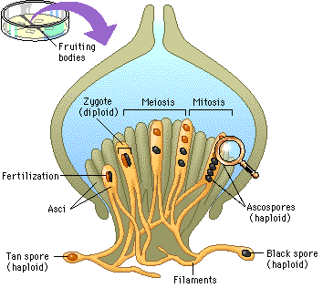

In this exercise you observe the results of crossing over in a fungus, Sordaria. In the figure below, a cross between two haploid strains of Sordaria produces spores of different colors.
Where the growing filaments of the two strains meet, fertilization occurs and zygotes form. Meiosis occurs within fruiting bodies to form haploid ascospores, spores contained in asci (special sacs). Then one mitotic division doubles the number of ascospores to eight.

To study the process of spore formation, select the magnifying glass above.